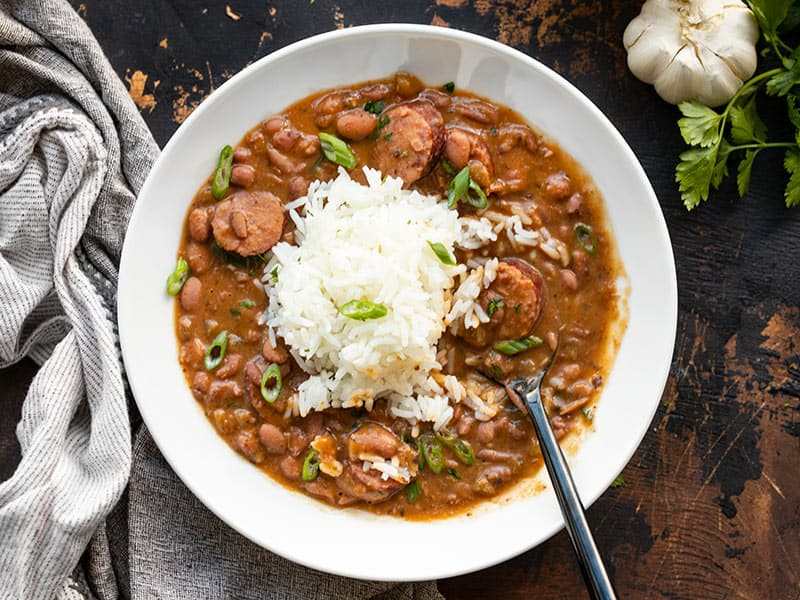

Louisiana Red Beans and Rice

Description
Looking for a hearty rice dish with a kick? This authentic Louisiana red beans and rice is a budget-friendly recipe with incredible Cajun flavor. Andouille sausage joins garden-fresh vegetables, zesty spices, and long grain rice in this deliciously down-home recipe. Learn all about this boldly savory dish, including tips on choosing the best beans and what to serve alongside it.
Ingredients:
- 1 pound dry kidney beans
- Onion
- Olive oil
- Green bell pepper
- 2 stalks celery
- Garlic
- Water
- Cajun seasoning
- 2 coups of long grain white rice
Steps:
- Rinse beans and then soak in a large por of water overnight.
- Heat oil in a skillet over medium heat. Cook onion, bell pepper, celery and garlic in olive oil for 3 to 4 minutes.
- Transfer the beans to a large pot with 6 cups of water. Stir cooked vegetables into beans. Season, bring to boil, and then reduce heat to medium. Simmer for 2 1/2 hours.
- Stir sausage into beans and continue to simmer for 30 minutes.
- Meanwhile, prepare the rice. Bring the rice. Bring the water and rice to a boil in a saucepan. Reduce heat, cover, and simmer for 20 minutes. Serve beans over steamed white rice.